Scope & Collaboration
Project
Cross-functional Team
Context & The Gap
The breakdown happened in the middle.
Pfizer's digital presence was built for healthcare providers and investors. As the company shifted toward direct-to-consumer engagement, the experience wasn't ready.
The core problem wasn't awareness. People knew vaccines existed. The breakdown happened in the middle — the consideration phase. Users encountered dense, shifting guidelines and couldn't tell if the information applied to them.
This created a clear product opportunity: design a system that bridges the gap between passive awareness and confident action.
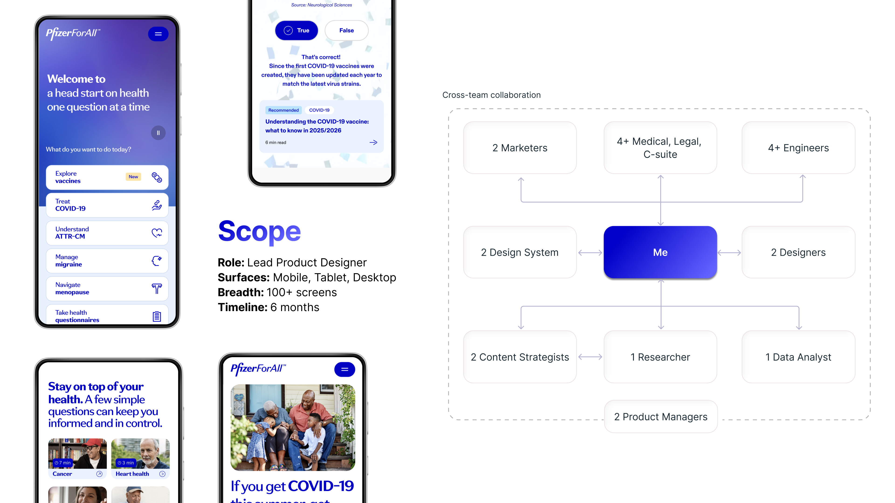
Modular Engagement Architecture
One system. Every therapeutic area.
Better pages weren't enough. The solution required a new architectural layer entirely — a modular routing engine that could handle varied, complex health inputs across every therapeutic area.
Vaccines, migraines, respiratory conditions — each runs on the same underlying logic, assembled from a shared system of condition hubs, questionnaires, and action modules.
How it works
User inputs — symptoms, risk factors, personal history — route through dynamic, condition-specific pathways. Each pathway is assembled from a shared component library: standardized condition hubs, progressive disclosure questionnaires, and personalized action modules.
Every new therapeutic area launches faster, with consistent quality — without rebuilding the UX from scratch.
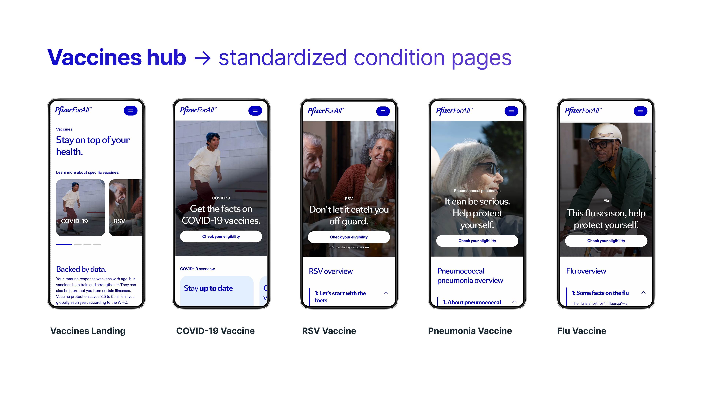
Standardized condition hub structure across therapeutic areas
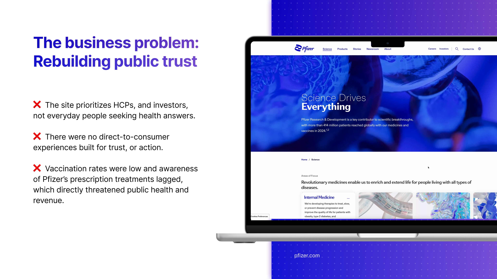

Condition hubs — each following the same hierarchy: context → eligibility → action
Product Design Decisions
The architecture set the structure. The UI had to make it feel effortless.
01 — Condition Hubs
Standardized condition hubs
Disjointed, text-heavy pages were replaced with consistent templates. Each condition hub followed the same hierarchy: clinical context, eligibility criteria, and a clear next step. Users learned the pattern once and could navigate confidently across conditions.
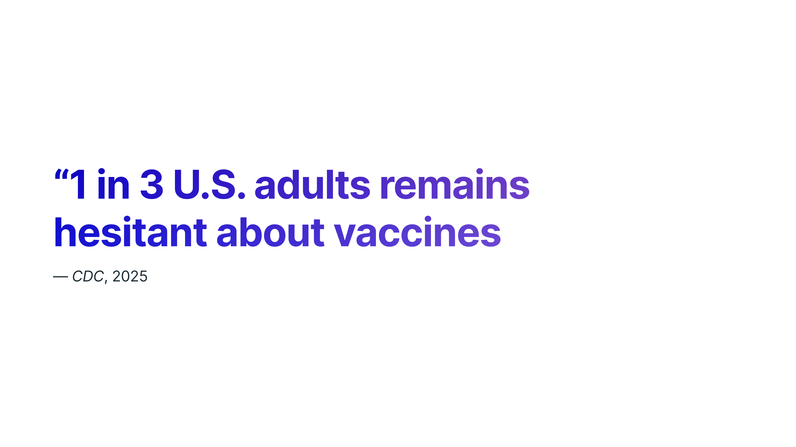
Condition page templates — consistent hierarchy across vaccine types
02 — Eligibility Quiz
Progressive disclosure
The eligibility questionnaire was restructured into focused, single-question interactions. Complex medical inputs were broken into digestible steps. Time estimates and reassuring microcopy reduced anxiety at each decision point.
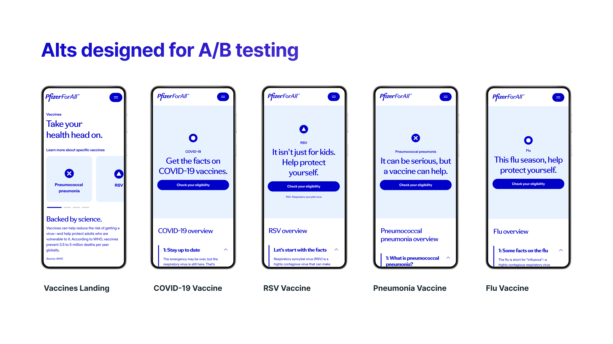
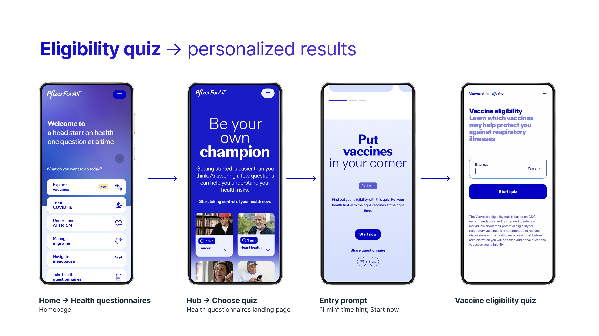
Progressive disclosure flow — from homepage to personalized recommendation
03 — Scheduling Flow
From answers to scheduling
Quiz results don't end at a summary screen. Personalized recommendations map directly into a scheduling flow — closing the distance between understanding and action without friction or re-entry.
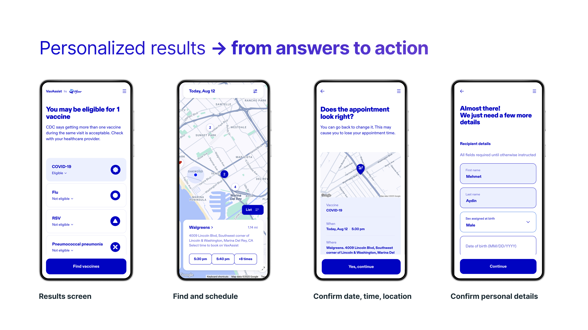
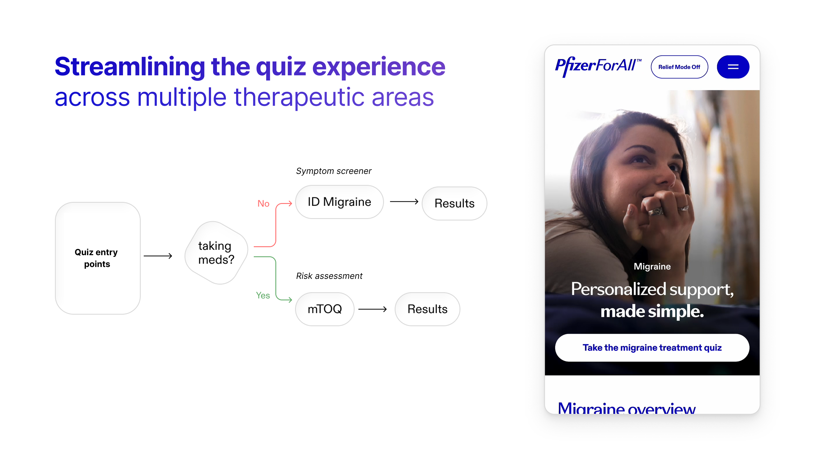
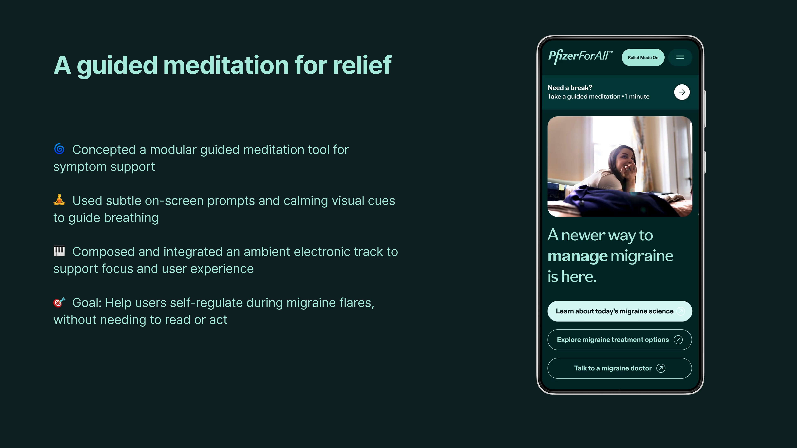
Results → Find vaccines → Schedule → Confirm details
Spotlight Feature
A scalable system must handle extreme contexts.
The migraine pathway surfaced a critical edge case: users seeking information during an active episode — navigating screens through pain, light sensitivity, and cognitive fog.
Relief Mode was the response. The standard UI shifts to a low-contrast palette with softer greens, reduced visual density, and larger touch targets. Guided meditation tools support in-the-moment relief alongside clinical information.
Relief Mode isn't a side feature. It's evidence that the system adapts to the user's physical and emotional state — not just their medical profile.
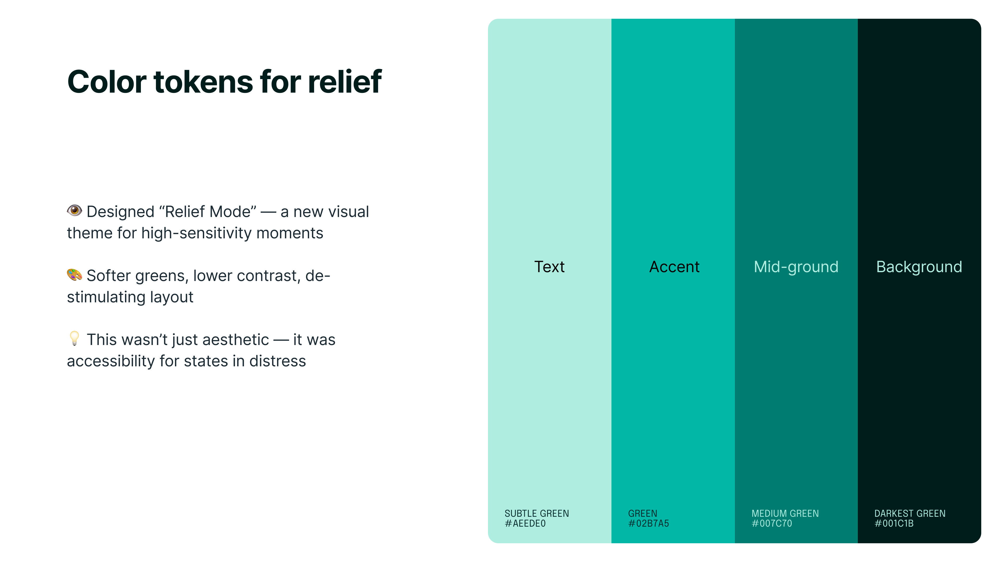
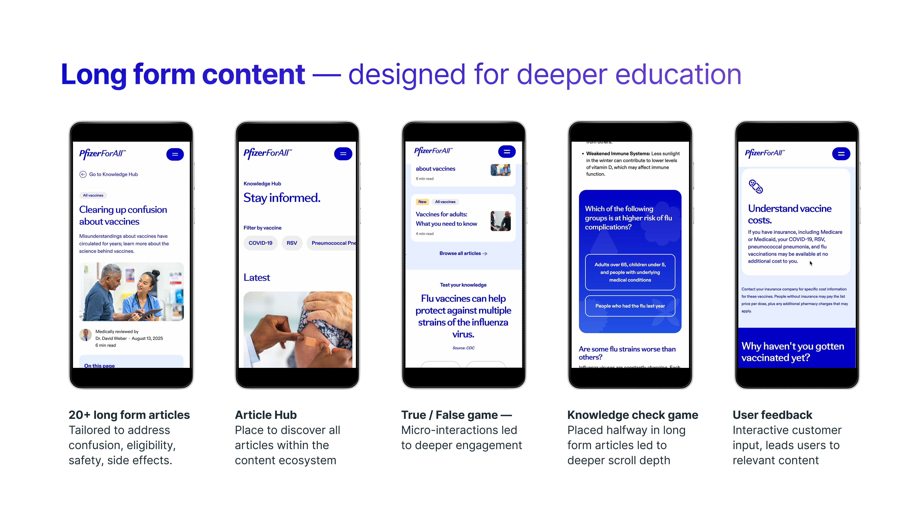
Relief Mode — low-contrast palette, reduced density, guided meditation
The Final Experience
The experience feels cohesive because the system underneath is cohesive.
The finished platform spans vaccines, migraine management, and long-form health education — all built on the same modular foundation.
20+ educational articles. Interactive knowledge checks. Personalized quiz flows. Responsive across every breakpoint.
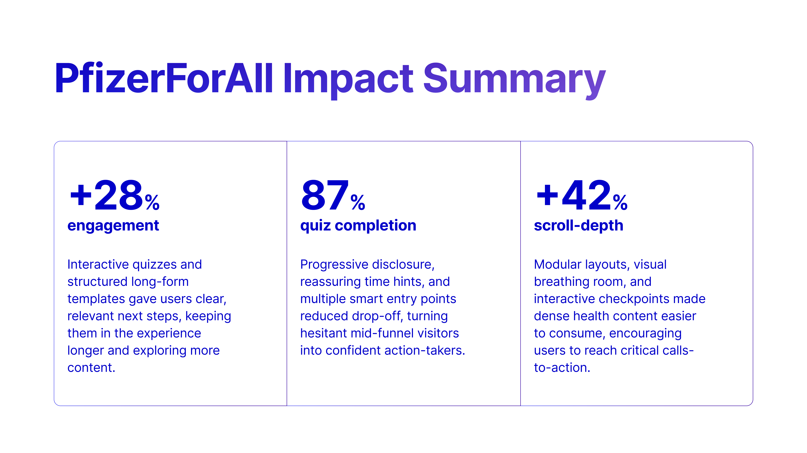
Long-form content system — articles, knowledge checks, and interactive feedback
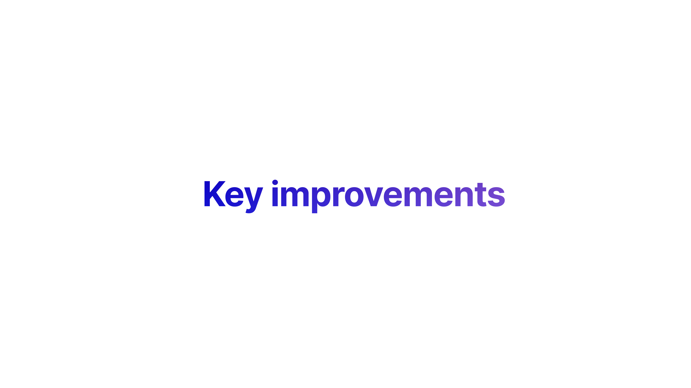
Multi-therapeutic quiz routing — unified system, multiple pathways
Outcomes & Reflection
The right architecture shifts behavior.
quiz start rate
Clearer entry points and contextual prompts drove higher immediate engagement.
quiz completion
Progressive disclosure turned hesitant visitors into active participants.
scroll depth
Modular layouts and visual pacing made dense health content consumable.
During a period of widespread hesitancy, we proved that the right UX architecture can shift behavior. Not by pushing harder, but by making the next step feel clear, personal, and safe.
People don't need more information. They need to feel that the information was made for them.